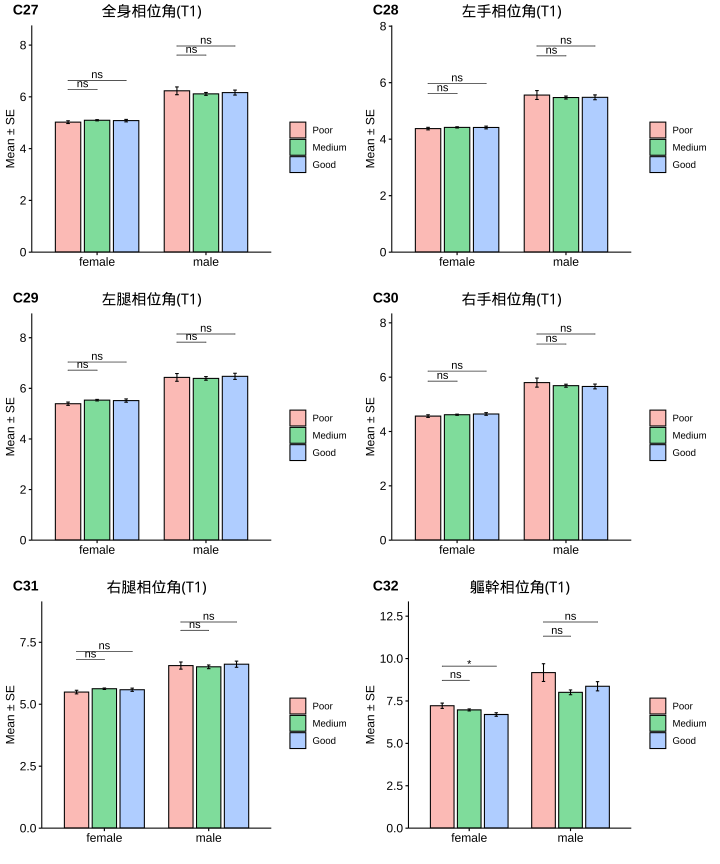

1.6 分層分析-2: 男性:睪固酮(Testosterone)
依據睪固酮(Testosterone)初始狀態進行分層分析，分成二個組別：
- 睪固酮低下: (小於 <350 ng/dl)
- 睪固酮正常: (大於 >350 ng/dl)
男性睪固酮分組&年齡分佈
|
|
|
|
相關分析(Correlation Analysis)
睪固酮(Testosterone) x 初始狀態(Baseline)
男性荷爾蒙「睪固酮」血中濃度與「體重」、「體脂」，以及「空腹血糖」、「空腹胰島素」和「胰島素抗性」(IR)具有顯著負相關。換句話說，相較於「睪固酮」濃度正常的人，「睪固酮」低下者傾向有較高的「體重」、「體脂」，「空腹血糖」、「空腹胰島素」和「胰島素抗性」(IR)也較高。



成效(Effectiveness)


1.6.0.8 成效(%)-Blood

| Low | Normal | 顯著差異 | |
|---|---|---|---|
| 人數 | 25 | 12 | |
| 體重(T0) | 98.81 ± 3.35 | 87.66 ± 2.89 |
|
| BMI(T0) | 32.16 ± 1.21 | 28.95 ± 0.96 | ns |
| 體脂重(T0) | 34.93 ± 2.52 | 25.38 ± 2.24 |
|
| 體脂率(T0) | 34.54 ± 1.49 | 28.39 ± 1.72 |
|
| 骨骼肌質量指數(T0) | 8.9 ± 0.19 | 8.71 ± 0.11 | ns |
| 骨骼肌率(T0) | 37.06 ± 0.86 | 40.61 ± 0.99 |
|
| 內臟脂肪面積(T0) | 14.28 ± 0.88 | 11 ± 1.26 |
|
| 腰圍(T0) | 110.18 ± 2.87 | 103.67 ± 5.85 | ns |
| 除脂體重(T0) | 63.88 ± 1.53 | 62.28 ± 1.08 | ns |
| 基礎代謝率(T0) | 1749.8 ± 32.95 | 1715.33 ± 23.28 | ns |
| 糖化血色素(T0) | 6.02 ± 0.18 | 5.68 ± 0.11 | ns |
| 空腹血糖(T0) | 100.64 ± 5.4 | 87.75 ± 2.67 | ns |
| 空腹胰島素(T0) | 20.07 ± 2.35 | 15.4 ± 2.91 | ns |
| 胰島素阻抗值(T0) | 5.23 ± 0.77 | 3.34 ± 0.63 | ns |
| β細胞功能(T0) | 219.13 ± 26.04 | 266.65 ± 57.49 | ns |
| 三酸甘油脂(T0) | 187.92 ± 20.43 | 136.33 ± 20.02 | ns |
| 總膽固醇(T0) | 195.48 ± 7.92 | 203.33 ± 14.15 | ns |
| 高密度脂蛋白(T0) | 43.66 ± 2.22 | 45.09 ± 2.79 | ns |
| 低密度脂蛋白(T0) | 122.52 ± 6.23 | 142.08 ± 12.96 | ns |
| 解脂脢(T0) | 29.2 ± 3.65 | 22.5 ± 3.49 | ns |
| 睪固酮(T0) | 2.71 ± 0.12 | 4.52 ± 0.21 | **** |
| 體重(T1) | 91.94 ± 3.4 | 80.18 ± 2.82 |
|
| BMI(T1) | 29.96 ± 1.25 | 26.49 ± 0.91 | ns |
| 體脂重(T1) | 30.35 ± 2.57 | 20.19 ± 2.09 |
|
| 體脂率(T1) | 31.92 ± 1.67 | 24.59 ± 1.81 |
|
| 骨骼肌質量指數(T1) | 8.6 ± 0.18 | 8.38 ± 0.11 | ns |
| 骨骼肌率(T1) | 38.4 ± 0.95 | 42.59 ± 1.03 | ** |
| 內臟脂肪面積(T1) | 12.44 ± 1.03 | 8.33 ± 1.29 |
|
| 腰圍(T1) | 103.22 ± 3.18 | 95.47 ± 6.42 | ns |
| 除脂體重(T1) | 61.59 ± 1.47 | 59.99 ± 1.14 | ns |
| 基礎代謝率(T1) | 1700.44 ± 31.81 | 1665.92 ± 24.6 | ns |
| 糖化血色素(T1) | 5.48 ± 0.09 | 5.3 ± 0.08 | ns |
| 空腹血糖(T1) | 79.24 ± 2.45 | 76.83 ± 2.63 | ns |
| 空腹胰島素(T1) | 10.78 ± 1.37 | 12.51 ± 3.49 | ns |
| 胰島素阻抗值(T1) | 2.16 ± 0.28 | 2.52 ± 0.76 | ns |
| β細胞功能(T1) | 282.34 ± 45.33 | 288.12 ± 69.88 | ns |
| 三酸甘油脂(T1) | 150.32 ± 16.23 | 124.5 ± 18.36 | ns |
| 總膽固醇(T1) | 197.04 ± 11.17 | 206.33 ± 13.04 | ns |
| 高密度脂蛋白(T1) | 40.81 ± 2.43 | 38.42 ± 2.05 | ns |
| 低密度脂蛋白(T1) | 127.8 ± 9.85 | 143.33 ± 11.42 | ns |
| 解脂脢(T1) | 43.08 ± 8.03 | 28.92 ± 7.02 | ns |
| 年齡 | 41.36 ± 2.51 | 37.42 ± 2.43 | ns |
| 上傳照片天數 | 37.56 ± 3.77 | 34.64 ± 6.99 | ns |
| 飲食紀錄完成率(%) | 67.49 ± 6.1 | 61.04 ± 12.51 | ns |
| 紀錄數量 | 89.36 ± 11.78 | 96.64 ± 23.03 | ns |
| 上傳照片張數 | 153.88 ± 36.88 | 114.55 ± 28.86 | ns |
| 碳水攝取率(E%) | 16.53 ± 1.17 | 15.59 ± 2.16 | ns |
| 蛋白攝取率(E%) | 24.61 ± 1.04 | 29.31 ± 1.2 |
|
| 脂肪攝取率(E%) | 49.58 ± 1.73 | 53 ± 1.97 | ns |
| 總攝取熱量(日) | 1155.3 ± 54.75 | 1040 ± 76.34 | ns |
| 綠燈率(%) | 81.35 ± 2.89 | 85.17 ± 3.77 | ns |
| 黃燈率(%) | 14.22 ± 1.9 | 13.9 ± 3.71 | ns |
| 紅燈率(%) | 4.43 ± 1.55 | 0.93 ± 0.64 | ns |
| 水果(日) | 0.04 ± 0.01 | 0.09 ± 0.05 | ns |
| 蔬菜(日) | 2.45 ± 0.4 | 2.03 ± 0.55 | ns |
| 全穀雜糧(日) | 1.41 ± 0.25 | 0.62 ± 0.23 | ns |
| 蛋豆魚肉(日) | 6.57 ± 0.95 | 5.09 ± 1.42 | ns |
| 乳品(日) | 0.02 ± 0.01 | 0.05 ± 0.02 | ns |
| 油脂(日) | 2.78 ± 0.43 | 2 ± 0.55 | ns |
| ∆體重 | 6.88 ± 0.8 | 7.47 ± 1.11 | ns |
| ∆BMI | 2.21 ± 0.24 | 2.46 ± 0.37 | ns |
| ∆體脂重 | 4.58 ± 0.62 | 5.18 ± 1.11 | ns |
| ∆體脂率 | 2.62 ± 0.49 | 3.8 ± 0.89 | ns |
| ∆骨骼肌質量指數 | -0.3 ± 0.04 | -0.33 ± 0.05 | ns |
| ∆骨骼肌重 | -1.42 ± 0.21 | -1.44 ± 0.23 | ns |
| ∆內臟脂肪面積 | 1.84 ± 0.39 | 2.67 ± 0.59 | ns |
| ∆腰圍 | 6.96 ± 0.97 | 8.2 ± 1.66 | ns |
| ∆除脂體重 | 2.3 ± 0.34 | 2.29 ± 0.38 | ns |
| ∆基礎代謝率 | -49.36 ± 7.48 | -49.42 ± 8.04 | ns |
| ∆糖化血色素 | 0.54 ± 0.14 | 0.38 ± 0.08 | ns |
| ∆空腹血糖 | 21.4 ± 5.28 | 10.92 ± 4.03 | ns |
| ∆空腹胰島素 | 8.78 ± 2.31 | 2.89 ± 2 | ns |
| ∆胰島素阻抗值 | 3.07 ± 0.77 | 0.82 ± 0.49 | ns |
| ∆β細胞功能 | 63.21 ± 41.23 | 21.48 ± 50.35 | ns |
| ∆三酸甘油脂 | 37.6 ± 16.56 | 11.83 ± 20.63 | ns |
| ∆總膽固醇 | -1.56 ± 8.69 | -3 ± 13.98 | ns |
| ∆高密度脂蛋白 | -2.85 ± 1.8 | -6.68 ± 1.94 | ns |
| ∆低密度脂蛋白 | -5.28 ± 7.07 | -1.25 ± 11.42 | ns |
| ∆解脂脢 | 13.88 ± 6.54 | 6.42 ± 4.16 | ns |
| ∆體重(%) | 7.09 ± 0.84 | 8.5 ± 1.13 | ns |
| ∆BMI(%) | 7.1 ± 0.84 | 8.45 ± 1.12 | ns |
| ∆體脂重(%) | 14.53 ± 2.06 | 20.87 ± 3.64 | ns |
| ∆體脂率(%) | 8.31 ± 1.56 | 13.81 ± 3.14 | ns |
| ∆骨骼肌質量指數(%) | -3.4 ± 0.45 | -3.81 ± 0.6 | ns |
| ∆骨骼肌重(%) | -3.87 ± 0.56 | -4.09 ± 0.64 | ns |
| ∆內臟脂肪面積(%) | 15 ± 2.86 | 26.15 ± 4.21 |
|
| ∆腰圍(%) | 6.49 ± 0.91 | 8.22 ± 1.53 | ns |
| ∆除脂體重(%) | 3.55 ± 0.52 | 3.69 ± 0.6 | ns |
| ∆基礎代謝率(%) | -2.79 ± 0.41 | -2.88 ± 0.47 | ns |
| ∆糖化血色素(%) | 8.07 ± 1.64 | 6.56 ± 1.4 | ns |
| ∆空腹血糖(%) | 18.7 ± 2.93 | 11.29 ± 4.6 | ns |
| ∆空腹胰島素(%) | 34.87 ± 8.23 | 29.28 ± 10.73 | ns |
| ∆胰島素阻抗值(%) | 45.5 ± 7.56 | 33.37 ± 12.74 | ns |
| ∆β細胞功能(%) | 48.14 ± 21.19 | 10.88 ± 34.99 | ns |
| ∆三酸甘油脂(%) | 12.6 ± 5.93 | -5.56 ± 13.98 | ns |
| ∆總膽固醇(%) | -1.4 ± 4.58 | -3.98 ± 6.85 | ns |
| ∆高密度脂蛋白(%) | -5.8 ± 4.24 | -13.03 ± 4.38 | ns |
| ∆低密度脂蛋白(%) | -3.83 ± 6.61 | -4.88 ± 8.57 | ns |
| ∆解脂脢(%) | 54.51 ± 17.02 | 25.36 ± 14.15 | ns |
|
Significance: Comparison: Testosterone in male population. |